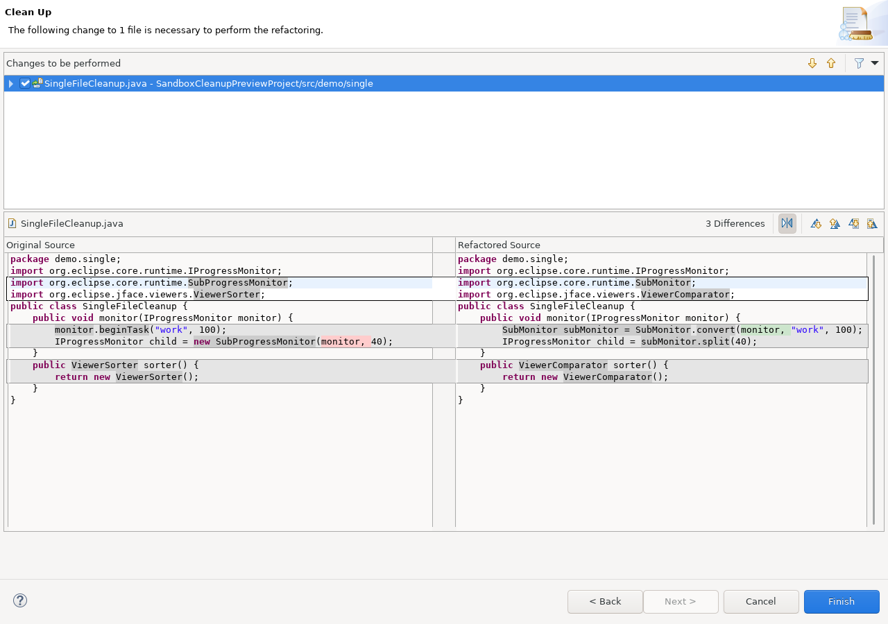
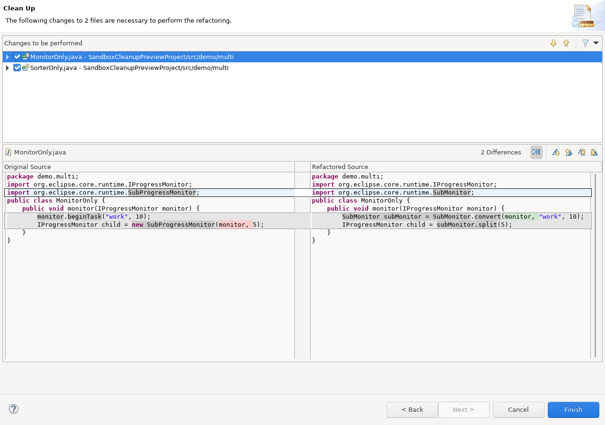
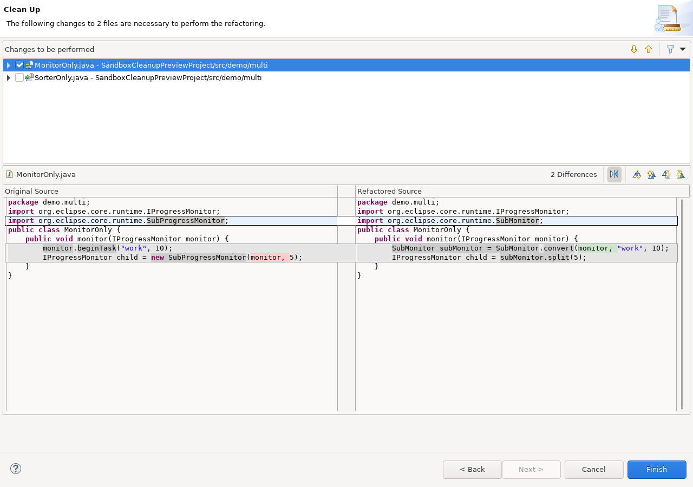

Open Java > Code Style > Clean Up, edit a cleanup profile, select JFace Cleanup (Sandbox), and enable only the migrations you intend to review.
The cleanup joins the parent task declaration and its child-monitor
allocations into the modern SubMonitor protocol.
monitor.beginTask("Import", 100);
IProgressMonitor child = new SubProgressMonitor(monitor, 40);
SubMonitor subMonitor = SubMonitor.convert(monitor, "Import", 100); IProgressMonitor child = subMonitor.split(40);
Several children sharing the same parent task use the same generated
SubMonitor. Existing local names are respected. Supported style
flags are mapped where an equivalent SubMonitor flag exists;
review label-related legacy flags because the old and new APIs do not expose
an identical presentation contract.
Binding-resolved uses of the deprecated sorter family are migrated to the corresponding comparator family.
import org.eclipse.jface.viewers.ViewerSorter;
class NameSorter extends ViewerSorter {
}
import org.eclipse.jface.viewers.ViewerComparator;
class NameSorter extends ViewerComparator {
}
The cleanup also handles supported declarations, constructor calls, parameters, return types, and casts. JFace, Common Navigator, and tree-path variants are mapped only when the exact source type has a known replacement. Unresolved or custom sorter types remain unchanged.
A locally constructed ImageData used by one image creation can
be moved into an SWT ImageDataProvider. This gives SWT a
zoom-aware provider boundary rather than one eagerly created data object.
PaletteData palette = new PaletteData(new RGB(0, 0, 0)); ImageData imageData = new ImageData(1, 1, 1, palette); Image image = new Image(device, imageData);
PaletteData palette = new PaletteData(new RGB(0, 0, 0));
Image image = new Image(device, (ImageDataProvider) zoom -> {
return new ImageData(1, 1, 1, palette);
});
The source ImageData must be a removable local value whose
construction can be reproduced safely inside the provider. Parameters,
values used more than once, multi-fragment declarations, escaping values,
and unresolved constructor bindings are deliberately left unchanged.
The three profile options are independent. A migration is offered only when the relevant source types and invocations resolve to supported Eclipse APIs and the complete local rewrite can be produced without guessing.
The profile tab preview is an example snippet. The actual execution preview appears after Source > Clean Up.... Standard Eclipse LTK cleanups expose selectable files; selecting a file displays the combined source diff produced by all enabled cleanup options for that file.



The standard preview does not invent separate checkboxes for every cleanup option inside one file. Only named file entries define the selection; an empty, unchecked presentation row is not an additional cleanup step. Independent local results can be selected per file; coordinated multi-file migrations use a separate atomic-selection contract tracked by carstenartur/sandbox#1451.
See Cleanup preview model for the shared behavior details.
The images in this Help bundle are generated from a real Eclipse workbench
by SandboxHelpScreenshotsSWTBotTest. Run the Maven profile
help-screenshots under Xvfb to regenerate them after UI changes.